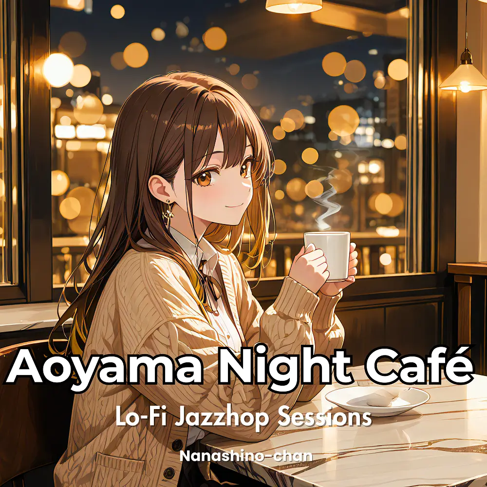

Lo-Fi · Jazzhop
Aoyama Night Café: Lo-Fi Jazzhop Sessions
Nanashino-chan
Explore Aoyama Night Café: Lo-Fi Jazzhop Sessions by Nanashino-chan: 22 instrumental tracks spanning Lo-Fi / Jazzhop. Start with 1.Aoyama Night Prelude / Coffee Steam Glow, preview the collection and find your favorites on streaming services.
2026-02-13 · Released · 22 tracks · Instrumental
Preview the album
The jacket stays here until you choose a track. Playback uses Apple Music. Select your track inside the player.
APPLE MUSIC PREVIEW
Choose a track to listen
The jacket stays here until you choose a track. Playback uses Apple Music. Select your track inside the player.
If playback is unavailable, open the album or track on the streaming service.
Find this album on streaming services
Links marked “search” open search results. Select the album or track on the service.
Track list 22
- 011.Aoyama Night Prelude
- 02Coffee Steam Glow
- 03Silent Street Corners
- 04Midnight Piano Drizzle
- 05Warm Cup Hideaway
- 06Soft Light Reflections
- 07Jazzhop Stroll in Aoyama
- 08Quiet Table Whisper
- 09Gentle Espresso Moments
- 10Moonlit Café Window
- 11Evening Calm Sketches
- 12Night Breeze Reverie
- 13Cozy Vinyl Stories
- 14.Slow Glow Walkway
- 15Soft Steps in the Night
- 16Lo-Fi Lantern Haze
- 17Blue Hour Jazzhop
- 18Late Night Comfort Cup
- 19Closing Time Serenade
- 20Last Train Reflections
- 21Gentle Nightfare
- 22Good Night Aoyama
Find a sound for your next post
Copy “Nanashino-chan + track title” and paste it into your social app’s music search. Availability depends on your region and account. Copying the name does not grant usage rights.